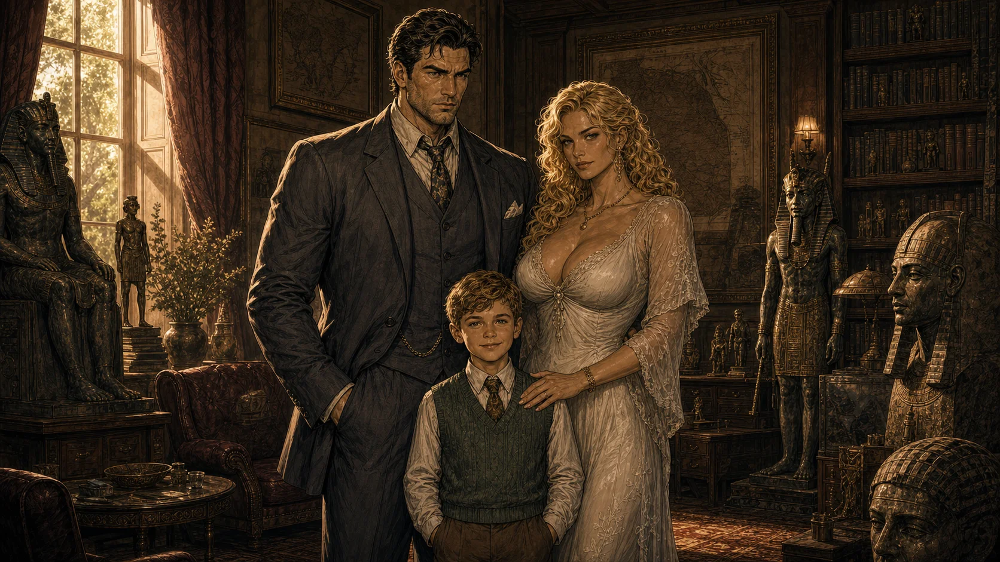
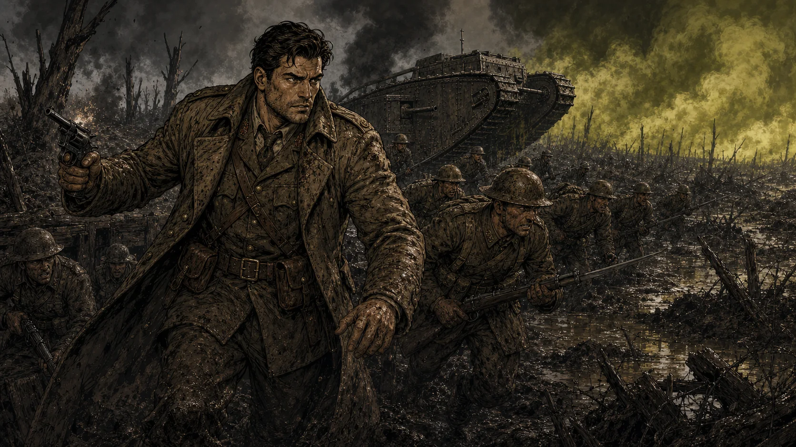
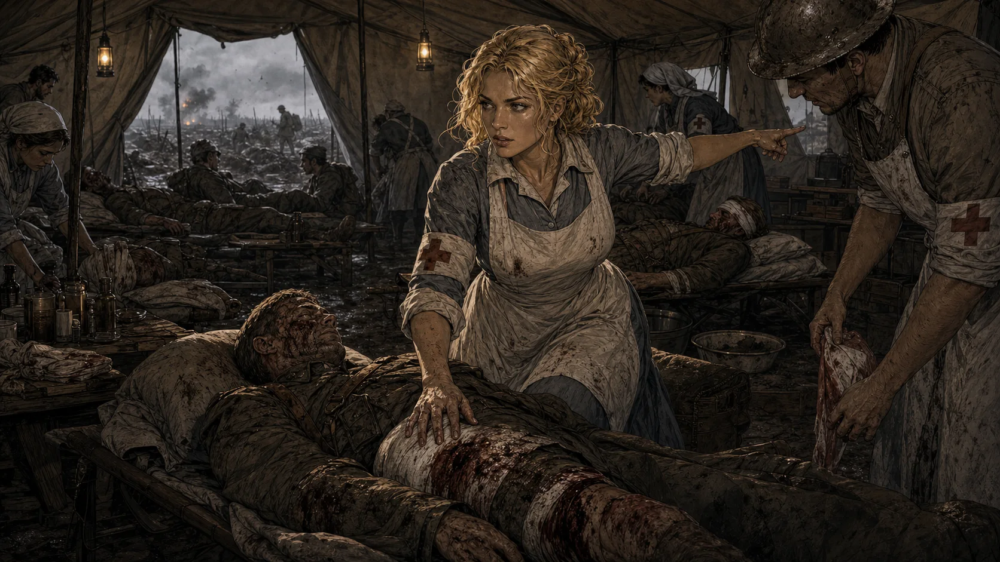
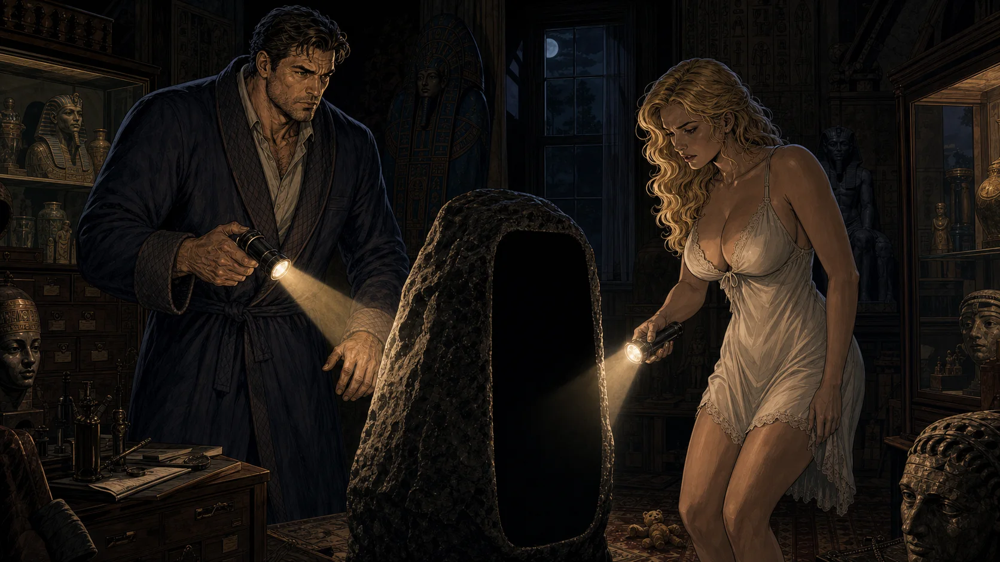

{kind=link}
{kind=link}
Human weight
High-resolution rotoscope-grade frame animation. Walking, running, drawing a weapon, jumping and climbing are acted actions — never frictionless icons.

MYSTERY OF ANCIENT DARKNESS · EGYPT, 1932
Alexander Compton has been taken through an impossible black stone. His parents will follow him into an Egyptian tomb older than memory — and love will not make the price of rescue clean.
Meet the Comptons“Two parents going into hell for their child — and discovering that love does not make the price of rescue clean.”
This is not a treasure hunt. It is a marriage under supernatural pressure, a family story carried by cinematic movement, old weapons, terrible magic and consequences that live inside the mechanics.
Provisional biographies based on current game canon. These will be replaced and deepened when Eugene's prequel novella is ready.

Field archaeologist. Royal Scots Fusiliers officer. Husband and father. Eugene is a massive, war-marked man who has already crossed one human hell and refuses to lose his son to an older one.
He knows Egypt, tactics, ancient languages and the hard arithmetic of keeping people alive. His modified Webley is not equipment chosen from a menu. It is history in his hand — an old comrade carried from the trenches into the tomb.
Aristocrat. Wartime nurse. Mother. Alice learned on the field-hospital floor that mercy can mean a bandage, a bullet or morphine and a prayer. She saved Eugene once — and woke something ancient inside herself.
Her Luger belonged to a dying young soldier who called her Lady-Angel. It has followed her ever since like a guardian. Alice is quicker, more intuitive and more spiritually powerful than Eugene. Every new gift from the darkness makes her stronger — and asks for more of the woman her family loves.


Nine years old. Curious, loved, and gone before his parents can cross the museum floor. The Stone closes. The trail leads back to Egypt. Everything the player does afterward — every wound, every spell, every compromise — is measured against one promise: bring their boy home.
Old-school clarity, modern painted presentation, and bodies that obey weight instead of animation shortcuts.
High-resolution rotoscope-grade frame animation. Walking, running, drawing a weapon, jumping and climbing are acted actions — never frictionless icons.
Weapons must be drawn, aimed, fired, reloaded and holstered. Internal RURK resolution keeps skill, cover, movement and fear inside every bullet.
Alice is the risk meter. Power changes her body, voice, stamina, mercy and relationships. The strongest route may be the one that costs the most.
Tombs, halls, ladders and ruins must function as real places. Collision follows visible art. The world never lies merely to create a platform.